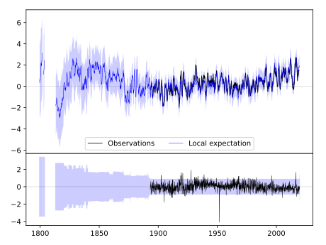
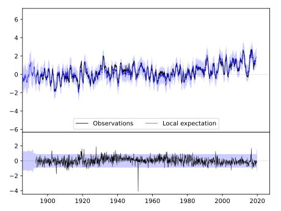
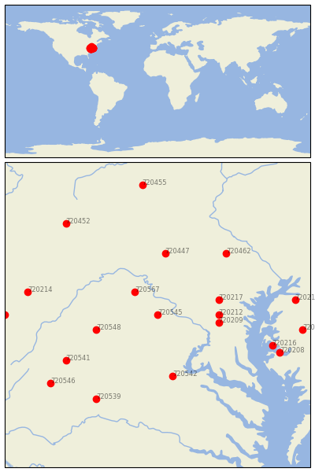

LINCOLN [USA]


| Neighbour | Name | Country | Distance | Lon/Lat | Years |
|---|
| 720545 | LINCOLN | USA | 0 | -77.7, 39.1 | 1893-2019 |
| 720567 | MARTINSBURG E WV RGN | USA | 42 | -78.0, 39.4 | 1891-2019 |
| 720212 | LAUREL 3 W | USA | 69 | -76.9, 39.1 | 1893-2019 |
| 720209 | BELTSVILLE | USA | 69 | -76.9, 39.0 | 1893-2019 |
| 720217 | WOODSTOCK | USA | 72 | -76.9, 39.3 | 1870-2019 |
| 720548 | WOODSTOCK 2 NE | USA | 72 | -78.5, 38.9 | 1893-2019 |
| 720447 | CHAMBERSBURG 1 ESE | USA | 89 | -77.6, 39.9 | 1858-2019 |
| 720542 | FREDERICKSBURG NP | USA | 90 | -77.5, 38.3 | 1893-2019 |
| 720462 | YORK 3 SSW PUMP | USA | 117 | -76.8, 39.9 | 1840-2019 |
| 720541 | DALE ENTERPRISE | USA | 123 | -78.9, 38.5 | 1893-2019 |
| 720216 | ROYAL OAK 2 SSW | USA | 137 | -76.2, 38.7 | 1891-2019 |
| 720539 | CHARLOTTESVILLE 2W | USA | 140 | -78.5, 38.0 | 1837-2019 |
| 720208 | CAMBRIDGE WATER TRMT | USA | 149 | -76.1, 38.6 | 1893-2019 |
| 720214 | OAKLAND 1 SE | USA | 150 | -79.4, 39.4 | 1877-2019 |
| 720213 | MILLINGTON 1 SE | USA | 156 | -75.9, 39.3 | 1893-2019 |
| 720546 | STAUNTON WATER TRMTM | USA | 157 | -79.1, 38.2 | 1893-2019 |
| 720211 | DENTON 2 E | USA | 165 | -75.8, 38.9 | 1892-2019 |
| 720452 | JOHNSTOWN | USA | 168 | -78.9, 40.3 | 1893-2019 |
| 720568 | PARSONS 1 NE | USA | 172 | -79.7, 39.1 | 1878-2019 |
| 720455 | STATE COLLEGE | USA | 189 | -77.9, 40.8 | 1882-2019 |